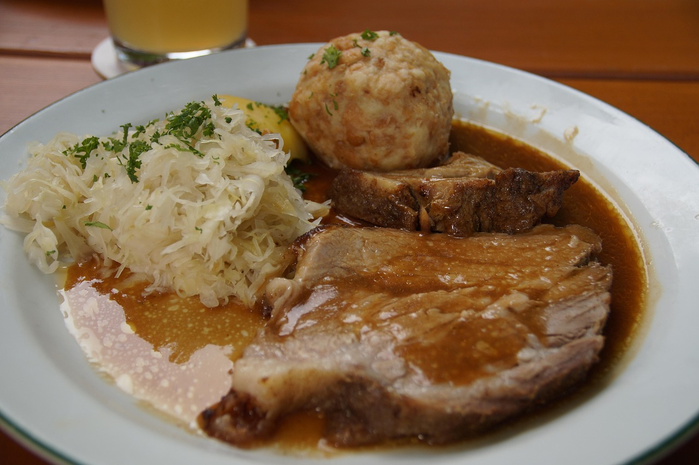

Roast pork with dumplings and sauerkraut
back

Description
Ingedients
- Pork shoulder
- Onions
- Cloves of garlic
- Pork lard
- Caraway seeds
- Flour
- Salt, ground pepper
- Water
Steps
- Preheat the oven to 320 °F (160 °C)
Cut the onion roughly. Peel the cloves of garlic and press them.
- Salt the meat generously
Dust it with pepper and crushed caraway seeds from all sides. Then rub the pressed garlic onto the pork.
- Grease a roasting pan with lard
Pour the onion over the bottom of the pan. Place the seasoned meat on the onion. Pour in 1 cup of water.
- Roast the pork uncovered for 2-2.½ hours or until soft
Flip the meat from time to time so that it has a nice brown color over the whole surface. Also, stir the onion occasionally to prevent it from burning. If all the water evaporates, add ⅓ cup more.
- Transfer the roasted meat to a clean plate, cover with foil, and keep it warm.
- Place the uncovered roasting pan with the onion on the stove over medium heat. Reduce the juices to a necessary minimum, and stir occasionally.
- Add 1 tablespoon all-purpose flour and fry for 1 minute while stirring, preferably with a flat spatula; it helps you scrape the bottom of the pan to avoid burning flour.
- Pour in 2 cups of water, stir well, and bring to a boil. Reduce the heat to ⅓ and let the gravy simmer for 20 minutes.
- Strain the gravy through a sieve—season with pepper and salt to fit your taste.
Our task now is to arrange a slice of roasted pork, braised sauerkraut, and sliced dumplings on a plate nicely. Here we go.